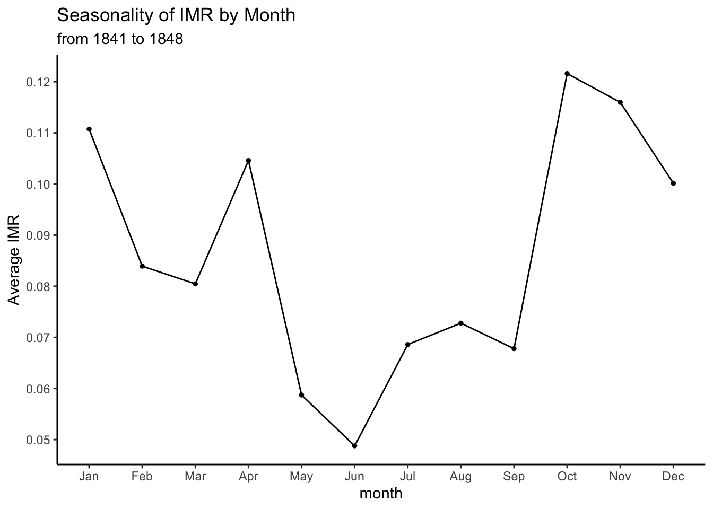
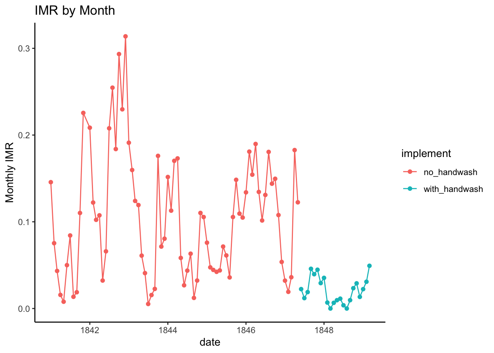

Sample 1: Handwashing
Bingling
2/16/2021
Graph 1: seasonality of mortality
monthly_deaths %>%
group_by(month = month(date,label=TRUE)) %>%
summarize(imr_by_month = mean(imr)) %>%
ggplot(aes(x=month, y=imr_by_month)) +
geom_line(group=1) +
geom_point(size=1) +
theme_classic() +
scale_y_continuous(breaks=seq(0,0.15,0.01)) +
labs(title = "Seasonality of IMR by Month", subtitle= "from 1841 to 1848", y="Average IMR")## `summarise()` ungrouping output (override with `.groups` argument)
Graph 2: monthly data
monthly_deaths %>%
ggplot(aes(x=`date`, y=imr, color=implement)) +
geom_point() +
geom_line() +
labs(title="IMR by Month", y="Monthly IMR")+
theme_classic()
Graph 3: yearly averages
monthly_deaths %>%
group_by(year = as.factor(year(date))) %>%
summarize(avg_year_imr = mean(imr)) %>%
ggplot(aes(x=year, y=avg_year_imr, group=1)) +
geom_line() +
geom_point() +
labs(title = "Yearly Average IMR", x="Year", y="Average IMR")+
theme_classic() +
scale_y_continuous(breaks = seq(0,1, 0.01))## `summarise()` ungrouping output (override with `.groups` argument)
Did IMR actually improve? Using a t-test to find out.
The result of the t-test gives us a p-value that is smaller than 0.01, which means that IMR did indeed improve with the implementation of handwashing.
t.test(imr ~ implement, data = monthly_deaths)$p.value## [1] 1.445277e-15Graph 4: Radar Chart
monthly_deaths %>%
group_by(month = month(date, label=TRUE)) %>%
summarize(avg_imr = mean(imr)) %>%
mutate(max = 0.15, min = 0) %>%
select(month,max,min,avg_imr) %>%
pivot_longer(max:avg_imr, names_to = "category", values_to = "value") %>%
pivot_wider(names_from = month, values_from = value) %>%
select(Jan:Dec) -> chart## `summarise()` ungrouping output (override with `.groups` argument)radarchart(chart,
seg = 5,
pcol=rgb(0.5,0.5,0.3,0.9),
pfcol=rgb(0.2,0.7,0.9,0.4),
cglty = 1,
axistype = 1,
axislabcol =rgb(0.9,0.7,0.7,0.9) ,
caxislabels = c(0,0.03,0.06,0.09,0.12,0.15),
calcex = 1,
cglcol = "grey",
cglwd = 0.8,
vlcex = 0.8,
title = "Seasonality of IMR by Month"
)